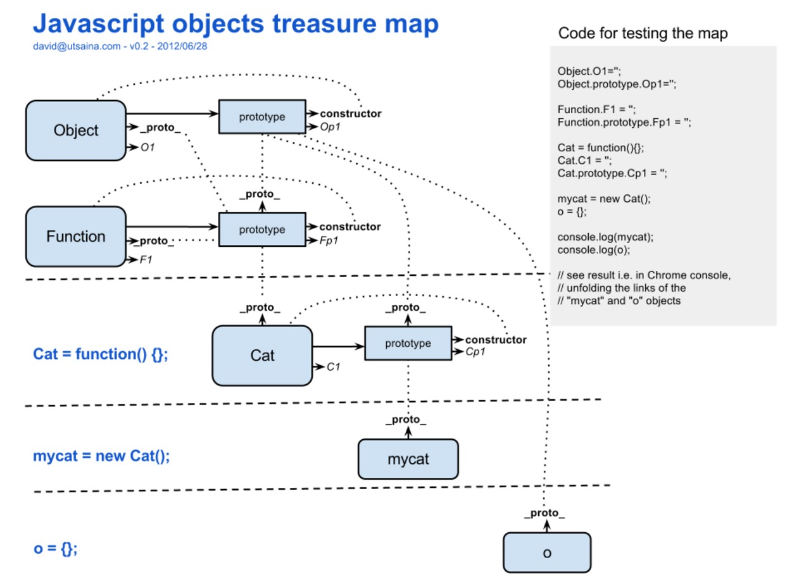
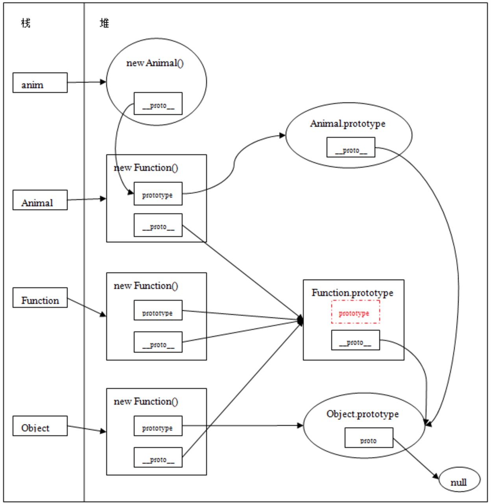
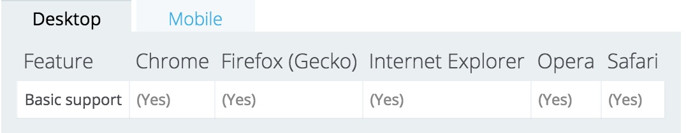
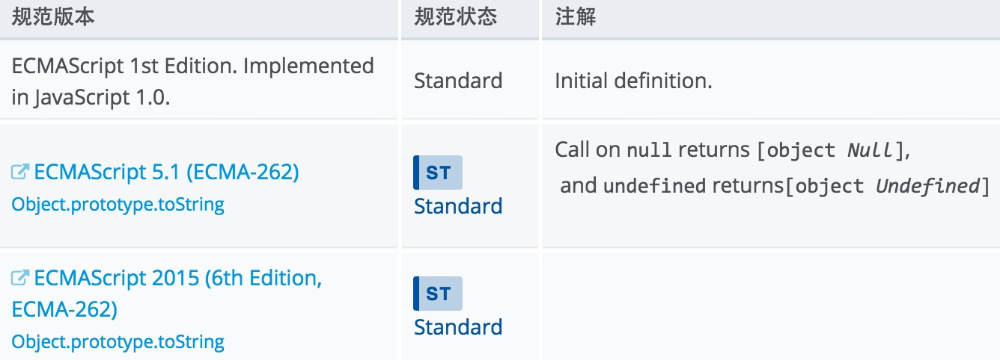

prototype是每个函数对象都具有的属性，称为原型对象。在Javascript中，所有对象都是基于Object，所有对象都继承了Object.prototype的属性和方法，它们可以被覆盖。Object.prototype属性是不可写，不可配置，不可枚举的。
例子
普通对象的__proto__
function Person() {}
var p = new Person();
console.log(p.__proto__ === Person.prototype); //true
console.log(Object.__proto__ === Function.prototype); //true
console.log(Function.__proto__ === Function.prototype); //true构造器/函数的__proto__
所有的构造器/函数的__proto__都指向Function的prototype
function Person(name) {
this.name = name ;
}
console.log(Person.__proto__ === Function.prototype); //true 原型链
每个对象上都有一个__proto__属性，原型链上的对象是靠这个__proto__属性连接在一起的。当我们访问一个对象的属性时，如果当前对象不存在该属性，则会去__proto__里找，这个__proto__又会有自己的__proto__，这样就形成一个原型链。
function Person() {
this.name = 'person';
}
function Man() {
this.sex = 'male';
}
var m = new Man();
m.__proto__ = Person;
console.log(m.name); //'person'禁用
利用__proto__属性扩展一个对象，只能适用于可扩展的对象，一个不可扩展对象的__proto__属性是不变的：
var obj = {};
Object.preventExtensions(obj);
obj.__proto__ = {}; // 抛出异常TypeError参考资料
proto参考资料
Object的proto属性
例子：
基本规则
function Person(name) {
this.name = name;
}
var p = new Person("ZhangSan");
console.log(p.constructor === Person); // true
console.log(p.constructor === Person.prototype.constructor); // true
//所有构造器/函数的constructor指向Function
console.log(Person.constructor); // function Function() { [native code] }
console.log(Object.constructor); // function Function() { [native code] }constructor是可变的
当我们重新定义函数的prototype时，constructor是变化的
function Person(name) {
this.name = name;
}
Person.prototype = {
constructor: Person,
getName: function(){
return this.name;
}
}
var p = new Person('zhangsan');
console.log(p.constructor === Person); // false
console.log(p.constructor === Object); // true
console.log(Person.prototype.constructor === Object); // true__proto__与prototype
function Animal(){}
var a = new Animal();  参考链接
obj.hasOwnProperty(prop)示例
1.hasOwnProperty()方法会忽略从原型链上继承的方法
var person = {
name: 'hello'
};
console.log(person.hasOwnProperty("name")); //return true
console.log(person.hasOwnProperty("toString")); //return false
console.log(person.hasOwnProperty("hasOwnProperty")); //return false2.如果一个对象拥有自己的hasOwnProperty()方法，那么原型链上的方法会被覆盖。如果需要使用原型链上真正的hasOwnProperty方法，可以使用call方法
var foo = {
name: 'zhangsan',
hasOwnProperty: function () {
return false;
}
}
foo.hasOwnProperty("name"); // return false;
Object.prototype.hasOwnProperty.call(foo, "name"); //return true3.hasOwnProperty()与for...in
for...in用于对数组或者对象的属性进行循环操作，但是for...in循环总会访问对象的原型，看下原型中是否有属性，所以建议不要对数组进行for...in循环。而可以结合hasOwnProperty()方法使用，可以避免不必要的循环
var arr1 = [1, 2, 3, 4, 5];
Array.prototype.age = 13;
for(var i in arr1){
console.log(arr1[i]); //1 2 3 4 5 13
}
for(var i in arr1){
if(arr1.hasOwnProperty(i)){
console.log(arr1[i]); //1 2 3 4 5
}
}注意：for...in循环不一定按照属性定义顺序输出，所有浏览器的最新版本都按照chrome执行，先把当中的非负整数键提出来，排序好输出，然后其他属性按照定义的顺序输出。所以建议用户在定义对象属性时不要以纯数字
var obj = {
'name': 'zhangsan',
'1': '123',
'5': "567",
'age': 14,
3: '345',
'4': 456,
'-1': '123'
}
for(var i in obj){
console.log(i); // 1 3 4 5 name age -1
}4.规范
在JavaScript 1.5中提供标准实现
5.浏览器兼容性 
o.isPrototypeOf(obj) 理解为：对象o是否在对象obj的原型链上3 示例
function Foo() {
}
function Foo2() {
}
Foo2.prototype = new Foo();
function Foo3() {
}
Foo3.prototype = new Foo2();
var f = new Foo3();
console.log(Foo.prototype.isPrototypeOf(f)); //true注意：
obj.toSource()
var a = {};
console.log(a.toSource());
Uncaught TypeError: a.toSource is not a function({})TypeError: undefined is not a function (evaluating 'a.toSource()')obj.toString()示例：
var toString = Object.prototype.toString;
toString.call(new Date); // [object Date]
toString.call(new String); // [object String]
toString.call(Math); // [object Math]
//Since JavaScript 1.8.5
toString.call(undefined); // [object Undefined]
toString.call(null); // [object Null]规范

obj.toLocaleString()覆盖了toLocaleString的对象
各浏览器对toLocaleString()方法的支持也不是同的，主要是Safari比较特殊
obj.propertyIsEnumerable(prop)用法：
function firstConstructor(){
this.property = 'is not enumerable';
}
function secondConstructor() {
this.method = function(){}
}
secondConstructor.prototype.newProp = 'hello';
secondConstructor.prototype = new firstConstructor();
secondConstructor.prototype.constructor = secondConstructor;
var o = new secondConstructor();
o.ownProperty = 'is enumerable';
console.log(o.propertyIsEnumerable('ownProperty')); //返回true
console.log(o.propertyIsEnumerable('newProp')); //返回false
console.log(o.propertyIsEnumerable('property')); //返回false，因为是从原型链上继承下来的注意:Gecko核心浏览器，从 JavaScript 1.8.1 (in Firefox 3.6) 开始，propertyIsEnumerable("prototype")返回 false，不再是 true；这与 ECMAScript 5 的结果一致
hasOwnProperty()与propertyIsEnumerable()区别
hasOwnProperty方法在属性即使是非enumerable时也会返回true，例如Array的length属性。
var a = [];
snippet.log(a.hasOwnProperty('length')); // "true"
snippet.log(a.propertyIsEnumerable('length')); // "false"
通过Object.defineProperty()将enumerable值设为false，也会得到不同的返回值
var arr = [];
Object.defineProperty(arr, 'own', {enumerable: false});
console.log(arr.hasOwnProperty('own')); // "true"
console.log(arr.propertyIsEnumerable('own')); // "false"obj.watch(prop, handler) handler表示回调函数示例(仅能在Firefox下运行)
var o = {p: 1};
o.watch('p', function (prop, oldVal, newVal) {
console.log('o.' + prop + '由' + oldVal + '变为' + newVal);
return newVal;
});
o.p = 2; // 'o.p由1变为2'obj.valueOf()Object {}。对于类型为Number的对象，valueOf()返回该对象表示的原始数值。同样，对于Boolean对象来说，该方法返回与对象相关的布尔值。对于String对象来说，返回与对象相关的字符串。几乎在所有的环境中，Javascript都可以自动实现原始值和对象之间的转换，几乎没有必要自己调用valueOf()方法。Object.prototype.eval()Object.prototype.__defineGetter__()Object.prototype.__defineSetter__()Object.prototype.__lookupGetter__()Object.prototype.__lookupsetter__()